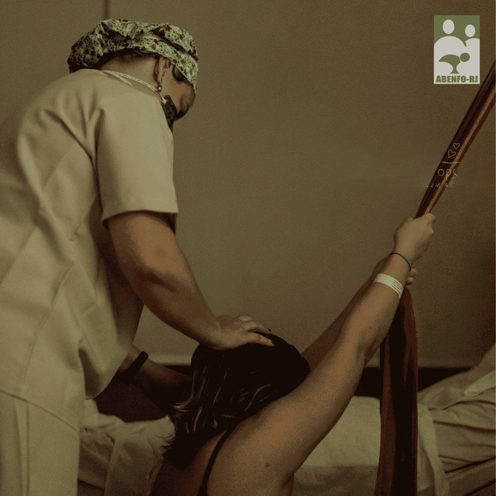

Missão
Defender e promover a enfermagem obstétrica como prática essencial à saúde da mulher e do recém-nascido.
Saiba mais →A ABENFO-RJ atua na defesa da assistência obstétrica baseada em evidências, na valorização profissional e na construção de espaços de formação, articulação política e transformação social.

Há mais de três décadas, a Abenfo RJ articula pesquisa, ensino e prática clínica para fortalecer a categoria no estado do Rio de Janeiro.
Defender e promover a enfermagem obstétrica como prática essencial à saúde da mulher e do recém-nascido.
Saiba mais →Capacitação continuada em reanimação neonatal, manejo da amamentação e cuidado obstétrico baseado em evidências.
Ver cursos →Encontros, seminários e fóruns promovidos pela Abenfo RJ e parceiros, abertos à categoria.
Ver agenda →Acesse a área restrita: biblioteca completa, materiais dos cursos e sua carteirinha digital.
Entrar na área do associadoAcompanhe as postagens da Abenfo RJ direto do nosso Instagram.
A Abenfo RJ respeita e cumpre a Lei de Acesso à Informação. Acesse nossos documentos oficiais.
Ver documentos